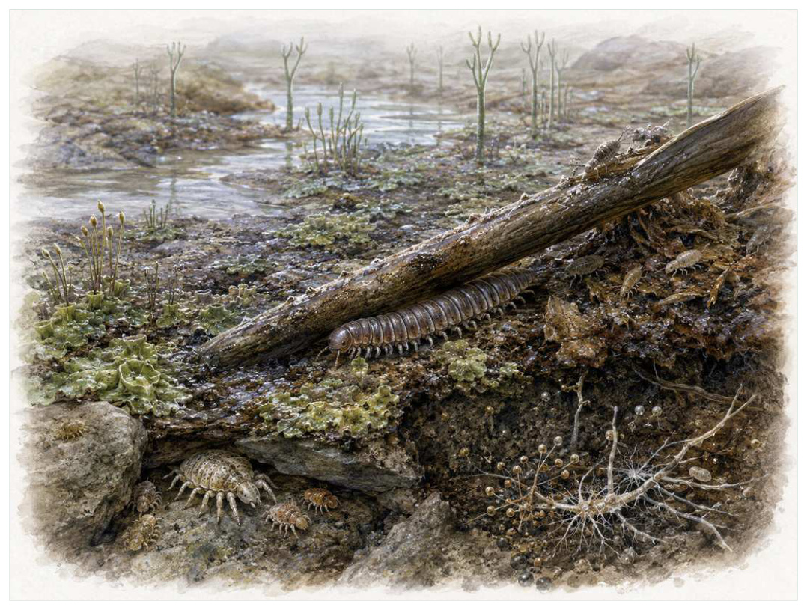

第06篇 · 志留纪：生命开始进入陆地 · 第 18 章
第一批陆地动物：在干燥、重力与紫外线之间
本篇主题:志留纪：生命开始进入陆地
海洋从灭绝中恢复，植物与节肢动物在裸露大陆上建立立足点。

本章科学复原配图 （用于呈现结构与生态关系, 不替代化石照片、测量数据与系统发育证据。）
我们来到志留纪至早泥盆世。最值得注意的不是“谁最强”，而是谁能把当时有限的能量转成更多存活后代。节肢动物早于脊椎动物建立陆地生活。外骨骼能支撑身体并减少水分散失，分节附肢适合在不平地面移动；气管或书肺让空气呼吸成为可能。早期陆生动物多数体型小，依赖潮湿微环境，食物来自微生物、植物碎屑和彼此。
进入这个时代
生态系统的真实声音不是巨兽咆哮，而是持续的摄食、分解、搬运和繁殖。每一具尸体、每一层落叶和每一次沉积扰动都会重新分配资源。低矮植物间没有鸟鸣，也没有大型植食兽。毫米到厘米级的多足类啃食腐殖质，蛛形类伏击更小的节肢动物，早期昆虫近亲在水边或潮湿缝隙生活。
在“第一批陆地动物：在干燥、重力与紫外线之间”所覆盖的时间里，不能把地理与气候当作固定背景。海陆位置、海平面、河流或植被结构会改变资源可达性，同一性状在不同地区可能得到完全相反的选择结果。
以第一批陆地动物：在干燥、重力与紫外线之间为例，物种数量并不等于生态功能。一个群落即使仍有许多物种，只要初级生产、授粉、礁体建造或大型植食等关键功能消失，食物网也会表现为深度崩溃。反过来，少数机会型物种高丰度并不代表系统已经恢复。 在本章中，这一约束具体落在“食碎屑者把植物有机物带入土壤食物网”这条关系上。
再从志留纪至早泥盆世的时间尺度看，旧结构被重新利用是宏演化的常见路径。自然选择无法从零绘图，只能修改已有骨骼、膜、基因调控和生活史。后来承担新功能的结构，往往最初因完全不同的局部收益而扩散。 它与“防水外骨骼”共同决定了后续变化可以沿哪些路径发生。
生态系统如何运转
“食碎屑者把植物有机物带入土壤食物网”还会改变可利用空间。一个支系若能进入新的水深、植被高度或沉积层，竞争会暂时减弱；随后追随者、捕食者和寄生者又会把新空间变成新的互动网络。
围绕“食碎屑者把植物有机物带入土壤食物网”，从演化树看，相似关系可能在远亲中反复出现。功能相近不必意味着近缘，而同一祖先结构也可能被后代改作完全不同的用途；生态解释必须与系统发育互相校验。 对第一批陆地动物：在干燥、重力与紫外线之间而言，这一后果还会与“小型捕食者控制其他节肢动物”相互放大或抵消。
把“小型捕食者控制其他节肢动物”放进食物网，可以看到它不是孤立行为。它会影响种群密度、栖息地使用和尸体进入分解链的速度，并把后果传给并未直接参与互动的物种。
围绕“小型捕食者控制其他节肢动物”，当环境快速越过生理阈值时，原有互动甚至来不及通过适应重新平衡。此时灭绝的选择性会更多取决于分布、食物来源和繁殖速度，而不是平时竞争中的相对强弱。 对第一批陆地动物：在干燥、重力与紫外线之间而言，这一后果还会与“洞穴和土壤孔隙提供湿度稳定的避难所”相互放大或抵消。
理解“洞穴和土壤孔隙提供湿度稳定的避难所”需要区分个体事件与长期压力。偶然一次捕食只改变个体命运，持续数千代的稳定关系才可能推动牙齿、外壳、感觉器官或生活史发生方向性变化。
围绕“洞穴和土壤孔隙提供湿度稳定的避难所”，这种关系没有永恒赢家。收益随密度和环境改变：防御越常见，攻击专门化的价值越高；资源越稀少，维持昂贵结构的代价越大。化石记录中的扩张与衰退，常是这种动态平衡被外部事件打破的结果。对第一批陆地动物：在干燥、重力与紫外线之间而言，这一后果还会与“食碎屑者把植物有机物带入土壤食物网”相互放大或抵消。
关键演化创新
在“第一批陆地动物：在干燥、重力与紫外线之间”中，围绕“防水外骨骼”，“防水外骨骼”一旦出现，还会改变其他物种的环境。新的捕食方式、取食高度或繁殖场所会制造选择压力，促使整个群落而不只是发明者发生响应。 它首先需要在志留纪至早泥盆世的生态条件下产生可测量收益。
就“防水外骨骼”而言，化石能较可靠地记录硬组织形态，却很少直接保留基因调控与短时行为。因此结构出现通常可信，最初用途和选择路径则应按证据标为主流解释或合理推测。 本章把它与“空气呼吸器官”并列，是为了显示复杂性状往往依赖多部分协同。
在“第一批陆地动物：在干燥、重力与紫外线之间”中，围绕“空气呼吸器官”，“空气呼吸器官”没有把生物推向更高级层级，而是重新划分可利用资源。它让某些水层、食物尺寸、活动时间或繁殖地点变得可行，同时也带来能量、材料和发育控制成本。 它首先需要在志留纪至早泥盆世的生态条件下产生可测量收益。
就“空气呼吸器官”而言，其宏观影响往往滞后于结构起源。一个创新可以先在小型、稀少支系中存在数百万年，直到环境变化或竞争者灭绝后才迅速扩张；“出现”和“成为主导”是两个不同事件。 本章把它与“陆地感觉与步态控制”并列，是为了显示复杂性状往往依赖多部分协同。
在“第一批陆地动物：在干燥、重力与紫外线之间”中，围绕“陆地感觉与步态控制”，“陆地感觉与步态控制”一旦出现，还会改变其他物种的环境。新的捕食方式、取食高度或繁殖场所会制造选择压力，促使整个群落而不只是发明者发生响应。它首先需要在志留纪至早泥盆世的生态条件下产生可测量收益。
就“陆地感觉与步态控制”而言，这也提醒我们不要寻找单一关键基因。复杂性状由多个组织和调控网络协调，改变任何一环都可能产生不同结果，演化路径因此呈树状而非直线。 本章把它与“防水外骨骼”并列，是为了显示复杂性状往往依赖多部分协同。
生命群像：把物种放回生态网络
Pneumodesmus（Pneumodesmus newmani）
Pneumodesmus（Pneumodesmus newmani）存在于中志留世候选。现有材料显示其大小约约厘米级，生态位置接近陆地食碎屑多足类。体表开口被解释为气门，是早期空气呼吸证据让它成为理解本章主题的合适案例，但不意味着同一类群所有成员都采用相同策略。
对Pneumodesmus而言，相似环境可能让远亲出现相近轮廓，但内部结构会保留祖先限制。比较它与现代类比时，应只借用可检验的功能，不把现代动物的行为、社会制度或代谢水平整套复制到古生物身上。 这使“体表开口被解释为气门，是早期空气呼吸证据”不能脱离其陆地食碎屑多足类角色来理解。
现有认识建立在标本单一且年代与结构解释曾受讨论之上。古生物学的可信度不是来自一件戏剧化标本，而是来自多件标本、多个地点和不同方法得到相容结果。新发现若改变比例或分类，并非此前研究毫无价值，而是证据边界被重新画清。
由Pneumodesmus这个案例看，从生态尺度看，它与本章其他成员共同维持一张网络。任何“最强”排名都会遗漏资源供应、幼体死亡、疾病和气候脉冲；真正决定长期成功的是种群能否在波动中不断完成繁殖。 它在中志留世候选留下的记录，因此同时是第18章所讨论的形态史和生态史的一部分。
Eoarthropleura（Eoarthropleura）
在晚志留世至泥盆纪，Eoarthropleura（Eoarthropleura）以约厘米级的身体参与食物网。它不是孤立的“明星生物”，而是陆地或半陆生多足类；与后来巨型节胸类相关，显示食碎屑谱系早期进入陆地决定它能利用哪些资源，也决定必须承担哪些成本。
对Eoarthropleura而言，它既可能是捕食者、植食者或工程者，也同时是其他生物的猎物、竞争者和分解资源。一次取食只是一瞬，长期生态影响来自成千上万个体反复搬运营养、改变植被或扰动沉积物。体型越大，这种工程效应通常越明显，但恢复速度也常越慢。 这使“与后来巨型节胸类相关，显示食碎屑谱系早期进入陆地”不能脱离其陆地或半陆生多足类角色来理解。
支持该解释的材料包括生活环境可能靠近水边，完全陆生程度不易确认。若不同证据出现冲突，应优先报告范围而不是强行给出单值。例如体长会随参照类群变化，运动能力会随软组织假设变化，系统位置也会随新增性状重新计算。
由Eoarthropleura这个案例看，它也展示专门化的双面性：结构在稳定环境中提高效率，却可能在气候、食物或竞争格局突变时限制转向。灭绝不是对设计的道德评分，而是性状、地理范围和偶然事件相遇后的历史结果。 它在晚志留世至泥盆纪留下的记录，因此同时是第18章所讨论的形态史和生态史的一部分。
三角蛛（trigonotarbids）
认识三角蛛（trigonotarbids）要先放弃静态骨架印象。它生活在志留纪至二叠纪，约毫米至厘米级，日常任务是作为陆地小型捕食者维持能量与繁殖。分节腹部和书肺式结构显示早期蛛形类空气呼吸只是这一整套生活史中最容易化石化的部分。
对三角蛛而言，成年体型往往主导复原，但幼体可能使用完全不同的食物和栖息地。若成长阶段跨越多个生态位，种群就同时依赖多套环境；其中任一环节中断都可能导致长期衰退。化石骨床的年龄结构因此比单具最大标本更能说明生态。这使“分节腹部和书肺式结构显示早期蛛形类空气呼吸”不能脱离其陆地小型捕食者角色来理解。
我们之所以能够作出上述判断，主要因为它们不是现代蜘蛛，也没有证据表明会结典型蛛网。单一结构通常有多种功能解释，所以还要查看磨损、病理、肌肉附着、沉积环境和近缘比较。计算模型能排除不可能姿势，却不能自动恢复没有保存的软组织。
由三角蛛这个案例看，面对仍有争议的细节，负责任的复原不是停止讲述，而是标注证据等级。形态、年代和亲缘可较确定，具体姿势、叫声、求偶和群猎则按材料降级；新标本会在这些边界内继续改写认识。 它在志留纪至二叠纪留下的记录，因此同时是第18章所讨论的形态史和生态史的一部分。
古蝎（Palaeophonus）
古蝎（Palaeophonus）生活在志留纪，已知体型约为数厘米。它在群落中的角色可概括为水边或陆地捕食者。最值得观察的结构是蝎形身体和足部结构用于讨论蝎类登陆。这些结构不是为了后来时代而准备，而是在当时直接影响摄食、运动、防御或繁殖。
对古蝎而言，这种生活方式还会反向塑造环境。摄食改变植物或猎物结构，足迹和掘穴改变沉积，尸体和排泄物把营养集中到局部。生态位不是它进入的固定房间，而是它与其他生物共同建造并持续修改的关系网络。 这使“蝎形身体和足部结构用于讨论蝎类登陆”不能脱离其水边或陆地捕食者角色来理解。
其复原依赖鳃还是书肺、完全海生还是陆生在不同标本间有争议。年代和保存形态通常属于较强证据，体重、速度、颜色和社会行为则需要额外假设。书中把这些层次拆开，是为了让读者知道哪些可视为事实，哪些仍应等待更多材料。
由古蝎这个案例看，它不是祖先链条上必须跨过的一格。演化树中同时存在许多近缘支系，只有少数留下后代；旁支化石同样关键，因为它们显示某组性状出现的顺序和可行范围。 它在志留纪留下的记录，因此同时是第18章所讨论的形态史和生态史的一部分。
早期弹尾类（Rhyniella praecursor）
在这一章的生命群像里，早期弹尾类（Rhyniellapraecursor）不能只当作图鉴名称。它出现于早泥盆世，体型大约毫米级，主要生活方式是潮湿地表的微小分解者或食真菌者；莱尼燧石三维保存显示六足动物早期已进入土壤微环境则说明身体怎样围绕这一生活方式进行组合。
对早期弹尾类而言，相似环境可能让远亲出现相近轮廓，但内部结构会保留祖先限制。比较它与现代类比时，应只借用可检验的功能，不把现代动物的行为、社会制度或代谢水平整套复制到古生物身上。 这使“莱尼燧石三维保存显示六足动物早期已进入土壤微环境”不能脱离其潮湿地表的微小分解者或食真菌者角色来理解。
科学家并未直接看见它生活，依据是它属于接近现代弹尾类的支系，不能代表所有昆虫祖先。现代类比可以帮助提出可检验模型，却不能取代化石；越具体的短时行为，越需要痕迹、内容物或重复病理等直接线索。
由早期弹尾类这个案例看，这个案例还提醒我们，亲缘和生态角色是两件事。近亲可以因资源分化而外形迥异，远亲也能因相似压力而趋同。把它放在演化树和食物网两个坐标中，才不会误写成线性进步。 它在早泥盆世留下的记录，因此同时是第18章所讨论的形态史和生态史的一部分。
因果链：环境、生态与性状
把“防水外骨骼”拆成成本与收益，可以避免把演化创新写成无条件升级。它可能扩大摄食、运动或繁殖的边界，却要付出组织材料、发育协调和日常维持的代价；“空气呼吸器官”又会改变这笔账在不同生命阶段的分配。对Pneumodesmus而言，体表开口被解释为气门，是早期空气呼吸证据在成年阶段或许十分醒目，但种群能否延续仍取决于幼体是否能找到食物、是否有安全的生长场所以及环境波动后是否保留繁殖者。化石往往偏爱成年硬组织，因此书写志留纪至早泥盆世时必须主动补上这些不易保存却决定长期命运的环节。
从时间顺序看，“防水外骨骼”的最早记录不等于它立即改写生态系统。结构可能先以小幅变异出现在稀少支系中，经历很长的试验期，直到“食碎屑者把植物有机物带入土壤食物网”所代表的资源条件或竞争格局改变，才出现可见的辐射。反过来，一个支系在化石记录中突然繁盛，也不证明关键结构刚刚产生；保存窗口打开、地理扩散或生态位释放都能造成类似图景。因此讨论志留纪至早泥盆世的创新时，本章把“首次出现”“功能完善”“多样化”和“成为生态主导”分成四个问题，避免用一个日期替代整段历史。
在志留纪至早泥盆世，身体不是若干部件的简单相加。“防水外骨骼”只有与“陆地感觉与步态控制”在供能、控制和发育上兼容，才可能稳定遗传；局部性能提高若超过呼吸、循环或支撑能力，整体反而失效。三角蛛的分节腹部和书肺式结构显示早期蛛形类空气呼吸因此应放进完整身体比例中解释，而不是把某一器官单独夸大。生物力学模型可以估算受力和运动范围，组织学能限制生长速度，近缘比较能提示同源关系；三者相互校验，才有可能从静态化石走向一个能够活着完成日常活动的动物或植物。
种群层面的成功还要考虑波动，而不仅是平均状态。在资源丰富年份，“空气呼吸器官”带来的高性能可能迅速增加个体数；在低谷年份，维持该结构的成本又会放大死亡。若Eoarthropleura拥有较广食谱或可迁移，便可能跨过低谷；若其与后来巨型节胸类相关，显示食碎屑谱系早期进入陆地高度依赖单一环境，恢复就更困难。化石群落中的丰度峰值、体型变化和地理收缩能为这种“繁荣—压力—恢复”循环提供线索，但必须与采样偏差区分。对志留纪至早泥盆世的任何稳态描述，都只是长期波动中被岩层保存的一小段。
本章的因果链最终落在繁殖上。“小型捕食者控制其他节肢动物”改变个体获得资源和避开风险的方式，“防水外骨骼”改变身体能做什么，但只有这些差异持续影响配子、胚胎、幼体和成体留下后代的概率，演化频率才会跨世代变化。Pneumodesmus和Eoarthropleura的化石常让人关注尺寸或武器，然而巢、蛋、芽孢、孢粉、幼体壳和成长线往往更接近选择真正发生的位置。理解第一批陆地动物：在干燥、重力与紫外线之间，因此要把最壮观的成年结构重新接回完整生活史。
时代横截面：个体、种群与证据
证据强度也应逐句区分。气孔、气管和书肺结构偶见于特异保存化石若直接记录形态或行为痕迹，可把某些可能性排除；足迹可早于实体骨架记录活动若来自模型或现代类比，则通常提供范围而非唯一答案。对三角蛛的分节腹部和书肺式结构显示早期蛛形类空气呼吸，我们也许能高可信地描述结构，却只能以主流解释讨论功能，以合理推测讨论日常行为。把层级写出来不会削弱故事，反而让读者知道未来新发现最可能改动哪一部分。
把结构看作模块，可以解释为什么过渡类型常显得“新旧并存”。Pneumodesmus的体表开口被解释为气门，是早期空气呼吸证据可能已经接近后来状态，而呼吸、繁殖或运动的其他部分仍保留祖征；Eoarthropleura可能采用另一种组合达到相似功能。演化不要求所有部件同步改变，只要求每个阶段的完整个体能够生活和繁殖。正因如此，真实谱系会产生旁支、回退和多次独立试验，而不是教科书式直梯。
再把三角蛛加入横截面，群落关系会从两者比较变成网络。它作为陆地小型捕食者，通过分节腹部和书肺式结构显示早期蛛形类空气呼吸连接资源与其他消费者；其数量变化可能同时影响Pneumodesmus和Eoarthropleura，甚至改变分解链和营养循环。这样的间接效应很少能由一具骨架直接证明，却可以从物种共现、丰度、痕迹化石和环境指标中受到约束。第一批陆地动物：在干燥、重力与紫外线之间的生态复原因此需要群落数据，而不只是著名标本的精细解剖。
地理同样会拆散看似整齐的时代标签。志留纪至早泥盆世并不是全球同时拥有同一种气候与群落：海盆深浅、纬度、山脉、河流和大陆隔离会让Pneumodesmus、Eoarthropleura与三角蛛的分布错开。一个支系可能在某地区衰退、在另一地区成为避难所；后来扩散又会造成化石记录中的“重新出现”。因此本章的代表物种用于说明机制，而不意味着它们都在同一地点同一时刻相遇。
“谁取代了谁”常把复杂过程压成单线叙事。在第一批陆地动物：在干燥、重力与紫外线之间中，即使Eoarthropleura在某层位后减少、三角蛛随后增加，也可能是二者分别响应气候或栖息地，而不是直接竞争导致淘汰。需要检查时间误差、地理重叠和资源相似度；只有三者都支持，替代关系才更可信。更多时候，生态系统通过功能重新组合过渡，旧支系与新支系会长期并存。
科学家为什么这样判断
“气孔、气管和书肺结构偶见于特异保存化石”最有价值的地方，是它能排除某些流行复原。关节不允许的姿势、承重无法支持的速度、与沉积环境冲突的生活方式，都可以被证据淘汰；剩余模型仍可能不止一个。
“足迹可早于实体骨架记录活动”提供的是一类约束而非完整录像。它可能精确记录某一瞬间，却未必代表全年或整个物种；也可能反映长期平均，却无法指出单次行为。把不同时间尺度的证据组合，才能重建生态过程。
“粪化石和植物咬痕约束食性”还需要与年代学绑定。只有事件先后关系可靠，才能讨论因果；若环境变化和生物响应的误差范围大量重叠，就应表述为相关或可能机制，而不是宣布已经证明。
在“第一批陆地动物：在干燥、重力与紫外线之间”这一问题上，把上述方法合在一起，研究者才能从残缺材料走向受约束的复原。任何一条证据都可能受到成岩、污染、样本量或现代类比的限制；结论越具体，越需要多条独立证据指向同一方向，并与志留纪至早泥盆世的地层背景相容。
过去的图景与今天的证据
发现陆生节肢动物化石不等于它们已完全摆脱水。许多现生节肢动物仍需高湿度或水中幼体，早期种类也可能在陆水之间往返。
围绕“第一批陆地动物：在干燥、重力与紫外线之间”，当多种机制可以并存时，不应为了故事简洁强迫选择唯一原因。氧气、温度、营养、捕食和地理隔离常形成反馈，研究目标是约束各环节的时间和强度，而不是寻找一句万能口号。
对志留纪至早泥盆世的材料而言，数据存在范围时，本书使用约数而非虚假精确值。体型会因缺失骨骼和软组织密度变化，年代会因定年误差调整，灭绝比例会因分类和采样校正改变；一个区间往往比醒目的单值更科学。
跨尺度观察
证据等级：地层年代和硬组织形态通常最强，食性若有多种独立线索可达主流解释，颜色、群居、求偶和叫声则常停留在合理推测。把等级写清并不会破坏画面，反而让读者知道想象可以走到哪里。在“第一批陆地动物：在干燥、重力与紫外线之间”中，这一尺度具体连接了“食碎屑者把植物有机物带入土壤食物网”与“防水外骨骼”，因而不能只从单个成年标本判断。
幼体视角：幼体常比成体更小、食物不同、耐受范围更窄。一个支系可在成年阶段拥有强大防御，却因卵、胚胎或幼体栖息地消失而灭绝。巢、蛋、成长线和年龄结构因此是解释繁殖策略的重要证据。 在“第一批陆地动物：在干燥、重力与紫外线之间”中，这一尺度具体连接了“小型捕食者控制其他节肢动物”与“空气呼吸器官”，因而不能只从单个成年标本判断。
生态工程：生物不是被动放在环境里。根系、礁体、洞穴、粪便和迁徙都会改变水流、土壤、养分与栖息地结构。工程效应一旦扩散，后续物种面对的环境已经是前一批生命共同建造的。 在“第一批陆地动物：在干燥、重力与紫外线之间”中，这一尺度具体连接了“洞穴和土壤孔隙提供湿度稳定的避难所”与“陆地感觉与步态控制”，因而不能只从单个成年标本判断。
通向下一个时代
从本章走向下一阶段时，需要保留的不是一串物种名，而是一个因果链：环境改变可用能量与栖息地，生态关系筛选性状，性状又反过来改造环境。当植物在泥盆纪长高并形成根系，陆地生态容量将迅速扩大；与此同时，海洋中的鱼类正以颌和成对鳍开展更剧烈的辐射。
本章精选来源
- [R34] Kenrick, P. & Crane, P. R. The Origin and Early Diversification of Land Plants. Smithsonian Institution Press, 1997.
- [R35] Morris, J. L. et al. The timescale of early land plant evolution. Proceedings of the National Academy of Sciences 115, E2274-E2283 (2018).
- [R36] Edwards, D., Morris, J. L., Richardson, J. B. & Kenrick, P. Cryptospores and cryptophytes reveal hidden diversity in early land floras. New Phytologist 202, 50-78 (2014).